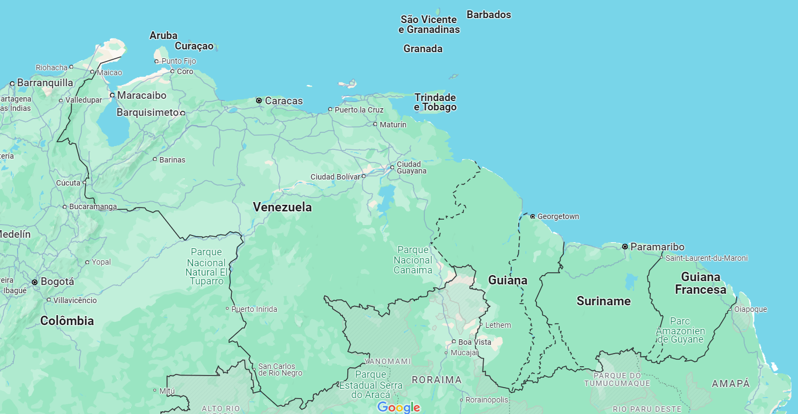

A febre do Oropouche ou Orov é uma arbovirose causada pelo vírus do gênero Orthobunyavirus, da família Peribunyaviridae, tendo o seu primeiro caso registrado na ilha de Trinidade e Tobago na América Central, um Estado insular caribenho, em 1955, na cidade “Vega de Oropouche”.
Esse vírus esteve circulando na região da floresta amazônica, tendo mais de 30 surtos registrados e casos esporádicos ao longo desses 60 anos.
Apesar disso, não houve muitas pesquisas sobre a doença. Por causa disso, não há vacinas contra Orov, tratamentos e medicações antivirais específicos e desconhecemos sobre a duração da imunidade após a primeiro contágio, complicações a longo prazo, sequelas, etc. Sendo assim, muitos dos dados sobre taxa de incidência em humano, distribuição e número de casos catalogados são inadequados e, possivelmente, subestimados.
A febre OROV é uma doença febril aguda semelhante a Dengue e não possui uma letalidade alta, o que pode explicar a falta de atenção adequada por parte de pesquisadores, agências internacionais de saúde e formuladores de políticas.
A febre Oropouche atrai mais atenção em 2024 devido aos novos casos que acontecerem fora da região Norte do Brasil, primeiras mortes registradas no país pelo Oropouche e a alta probabilidade de transmissão vertical.
Alguns pesquisadores acreditam que as mudanças climáticas, as queimadas e os desmatamentos foram responsáveis aproximar o vírus das cidades e regiões periurbanas, além de espalhar para outras regiões do Brasil. Nos últimos anos, a doença tem mostrado sinais de que circula em outros Estados brasileiros fora da região Norte
O virologista Felipe Naveca, da Fundação Oswaldo Cruz, diz que esperava ver complicações decorrentes do vírus à medida que os casos aumentassem e os testes se tornassem mais difundidos.
Somado a isso, foram relatados os primeiros casos letais da doença. Os dois primeiros casos acontecerem na Bahia, as pacientes jovens e sem histórico de comorbidades apresentavam febre, dor muscular, dores de cabeça, dor atrás dos olhos (dor retro orbital), náusea e vômito. Os casos deram negativo para as principais arboviroses (Dengue, Zika e Chikungunya) no teste sorológico e na detecção molecular, sendo provável que tenham sido infectadas pelo vírus Oropouche.
Com as primeiras mortes registradas, mais pesquisas foram feitas e, consequentemente, novas descobertas e possíveis correlações com a doença. O caso mais grave disso é a possibilidade da doença ultrapassar a placenta e infectar o bebê em gestantes, causando sérios problemas de má formação neurológica, microcefalia e até morte fetal. Há evidências da presença de anticorpos no sangue e no líquido cefalorraquidiano, sugerindo que o vírus foi transmitido diretamente da mãe para o feto. Porém, o relatório da Organização Pan-Americana de Saúde (OPAS) acrescenta que eles não são suficientes para estabelecer uma relação causal entre a infecção pelo Oropouche durante a gravidez e as malformações neurológicas nos bebês.
Judith Steen, neurobióloga da Harvard Medical School [que estudou como o vírus Zika causa microcefalia] (https://www.ncbi.nlm.nih.gov/pmc/articles/PMC10275723/), tem outra hipótese. Na Amazônia, o vírus pode ter circulado principalmente entre pessoas que tinham alguma imunidade de infecções anteriores, mas à medida que se espalhou para novas regiões, começou a infectar mais pessoas pela primeira vez. E as pessoas grávidas são provavelmente mais vulneráveis porque seu sistema imunológico fica mais fraco. “Se elas não foram expostas ao vírus antes e, além disso, seu sistema imunológico está suprimido, é mais provável que o vírus se replique mais e seja transferido para o bebê”, diz Steen.
Devido a situação e ao potencial do vírus se espalhar por toda a América. A Organização Pan-Americana da Saúde/Organização Mundial da Saúde (OPAS/OMS) insta os Estados Membros a fortalecer a vigilância e implementar o diagnóstico laboratorial para a identificação e caracterização de casos inclusive casos fatais e de transmissão vertical potencialmente associados à infecção por OROV. Além disso, o Ministério da Saúde recomenda aos profissionais de saúde que monitorem de perto as gestantes infectadas pelo Oropouche.
A transmissão se dá pela picado de mosquitos, porém o Aedes Aegypti não é o mosquito transmissor. Para se aprofundar sobre os sintomas, transmissão do vírus, diagnóstico, o que é transmissão vertical, meios de se proteger e o tratamento: Use a barra de pesquisa no início da página
*Não se esqueça de verificar as fontes, todo conhecimento disseminado na internet deve ser averiguado e baseado em fontes confiáveis*
Fontes: